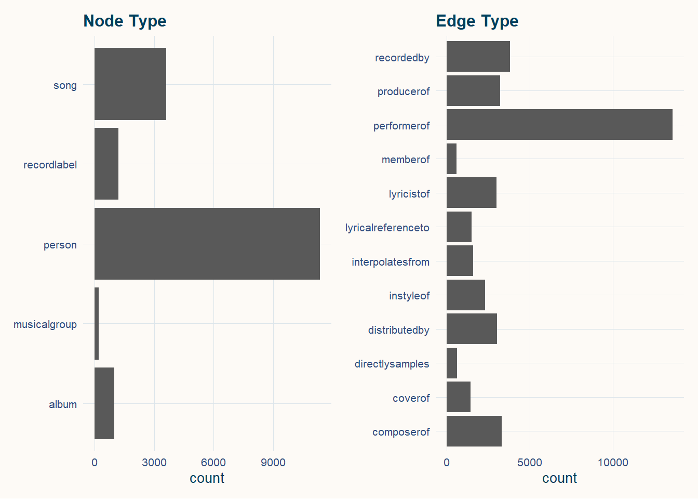
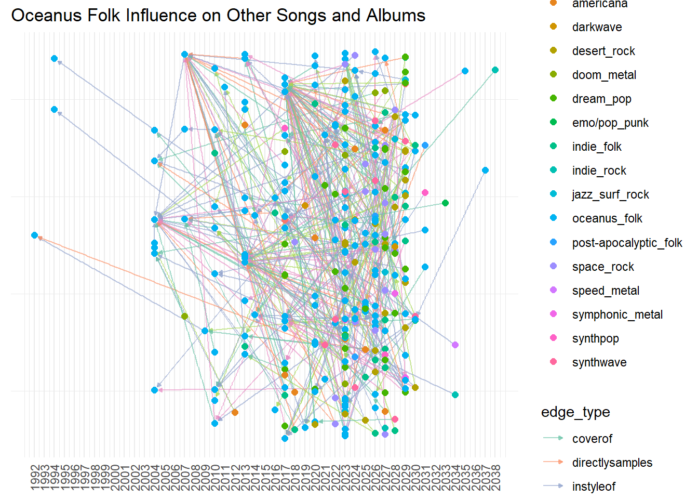
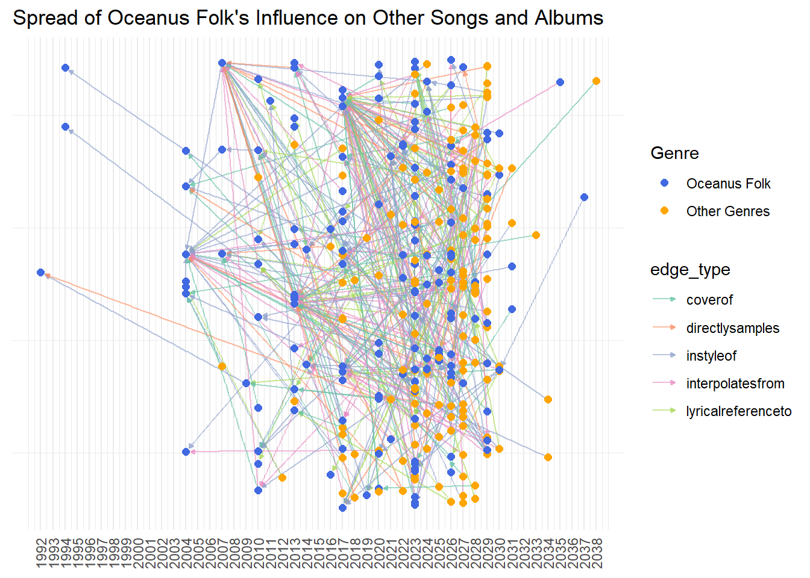
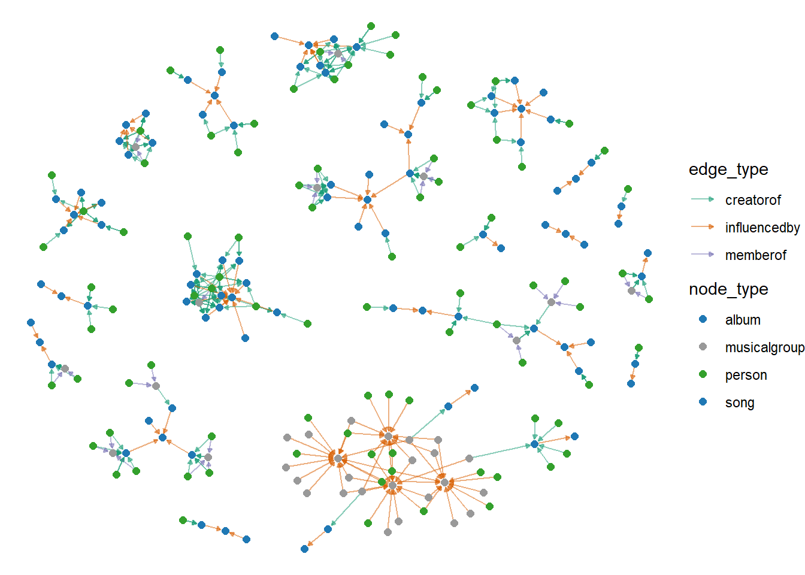
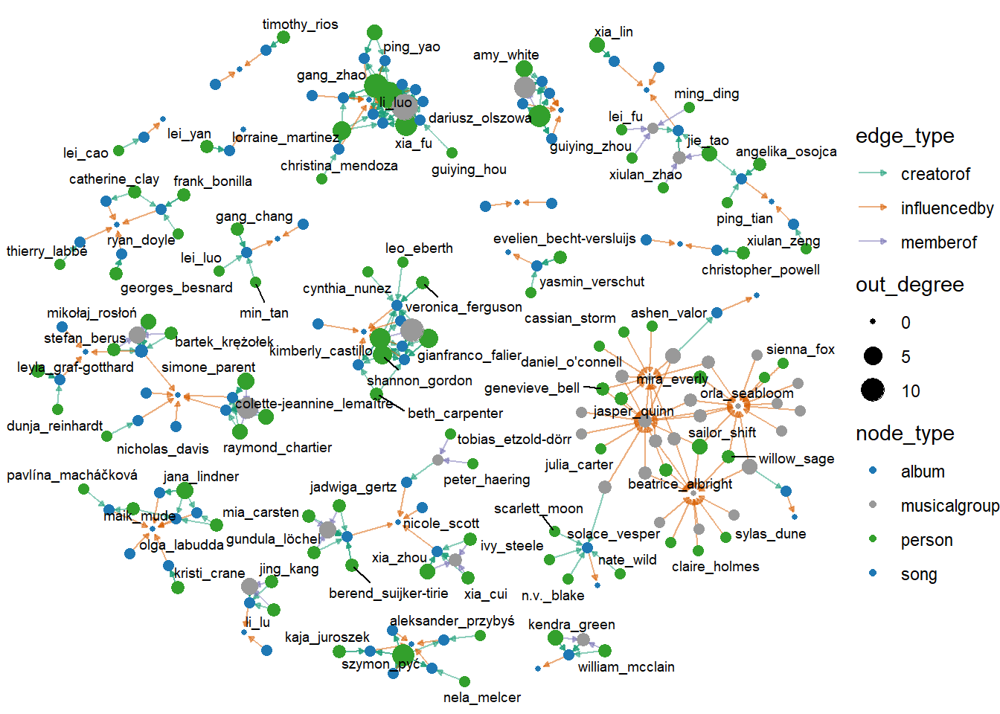
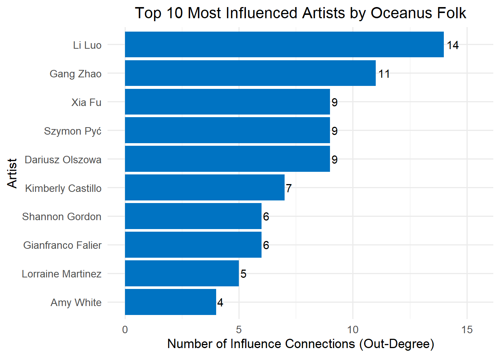
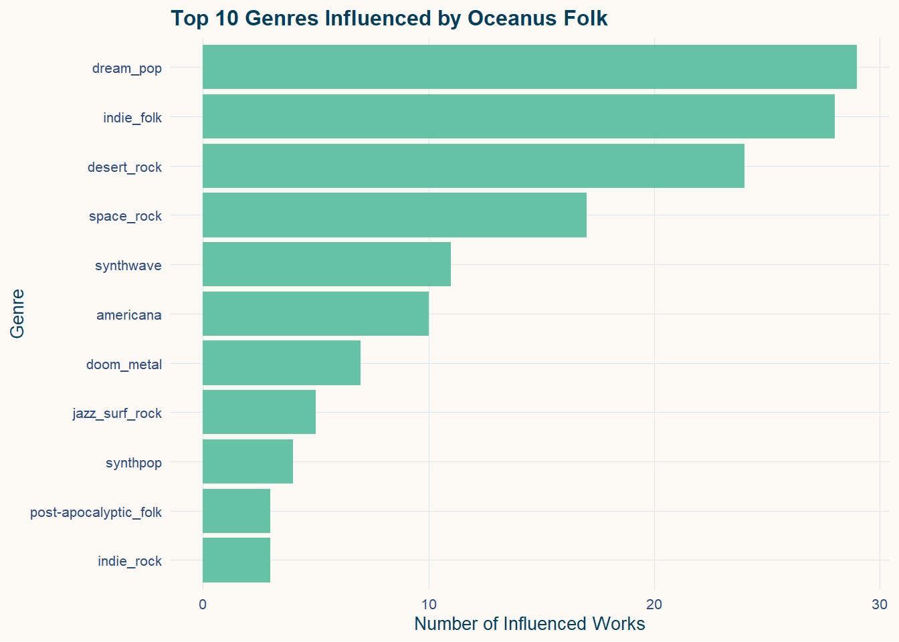
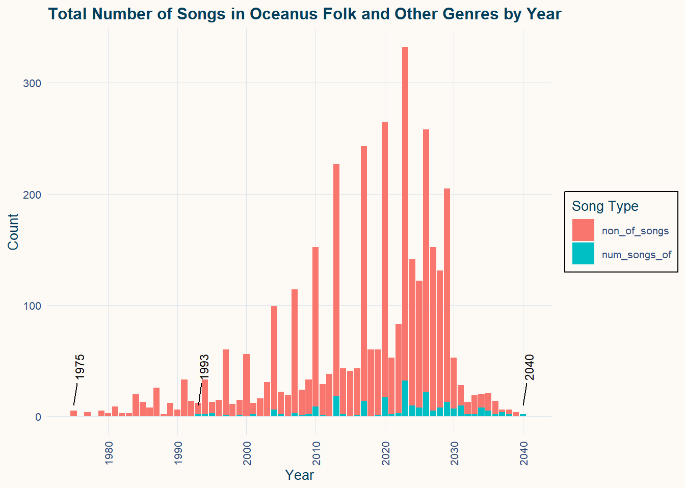
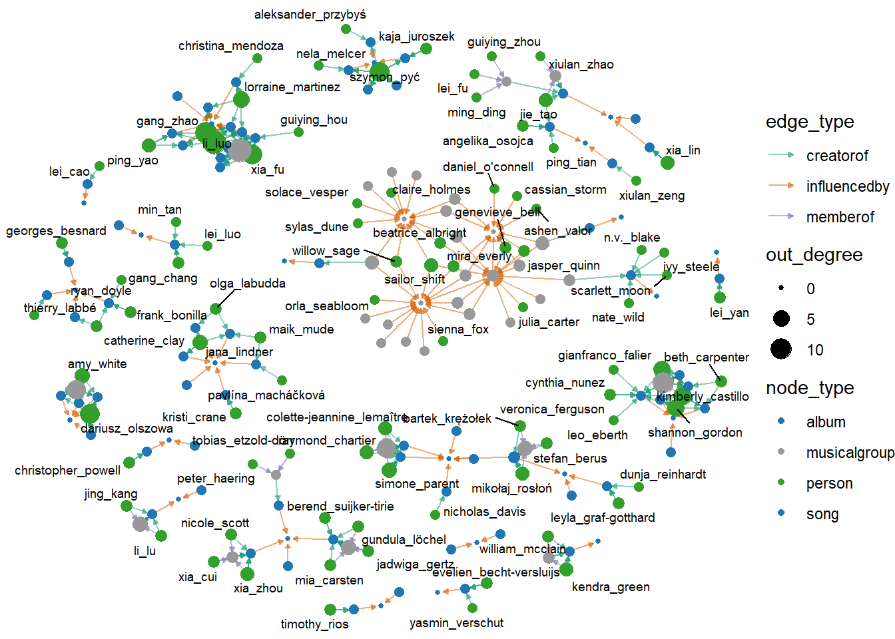

pacman::p_load(tidyverse, jsonlite,
SmartEDA, tidygraph,
ggraph,patchwork,DT,visNetwork)Take Home Exercise 02:
Oceanus Folk: Then-and-Now
Data Preparation
Import R Packages
For data cleaning, the following R packages will be used. They are tidyverse, jsonlite, tidygraph and ggraph.
Import Data
For the purpose of this exercise, MC1_graph.json file will be used. Before getting started, you should have the data set in the data sub-folder.
In the code chunk below, fromJSON() of jsonlite package is used to import MC1_graph.json file into R and save the output object
kg <- fromJSON("data/MC1_graph.json")Inspect Structure
str(kg, max.level = 1) #只看最高level的data structureList of 5
$ directed : logi TRUE
$ multigraph: logi TRUE
$ graph :List of 2
$ nodes :'data.frame': 17412 obs. of 10 variables:
$ links :'data.frame': 37857 obs. of 4 variables:Standardise All Column Names to Lowercase
Before extracting the node and edge tables, we standardize all column names in the kg$nodes and kg$links data frames. This step ensures consistent naming conventions by converting all column names to lowercase and replacing spaces with underscores. Such normalization is important for avoiding issues when referencing column names in later data transformation and visualization steps, especially in a tidyverse workflow.
# Standardize (lowercase + underscores)
# standardise column names（lowercase + _ ）
kg$nodes <- kg$nodes %>%
rename_with(~ str_replace_all(str_to_lower(.x), " ", "_"))
kg$links <- kg$links %>%
rename_with(~ str_replace_all(str_to_lower(.x), " ", "_"))
# standardise chr
kg$nodes <- kg$nodes %>%
mutate(across(where(is.character),
~ str_replace_all(str_to_lower(.), " ", "_")))
kg$links <- kg$links %>%
mutate(across(where(is.character),
~ str_replace_all(str_to_lower(.), " ", "_")))Convert year-like character to integer
# Convert year-like character columns into integer year
kg$nodes <- kg$nodes %>%
mutate(
release_date = as.integer(release_date),
written_date = as.integer(written_date),
notoriety_date = as.integer(notoriety_date)
)Extracting the edges and nodes tables
Next, as_tibble() of tibble package package is used to extract the nodes and links tibble data frames from kg object into two separate tibble data frames called nodes_tbl and edges_tbl respectively.
#Extract nodes and edges from kg
nodes_tbl <- as_tibble(kg$nodes)
edges_tbl <- as_tibble(kg$links)Initial EDA
Create a Oceanus Folk Style Platte for the charts
# Coeanus palatee
oceanus_palette <- c(
"Deep Blue" = "#003f5c", # Dark blue
"Sea Green" = "#2f4b7c", # medium blue
"Aqua Mist" = "#a8dadc", # sea grass green
"Sand Beige" = "#e9c46a", # sand
"Pearl White" = "#f1faee" # pearl
)
#
theme_oceanus <- function(base_size = 10, base_family = "Georgia") {
theme_minimal(base_size = base_size, base_family = base_family) +
theme(
plot.background = element_rect(fill = "#fdfaf6", color = NA),
panel.grid.major = element_line(color = "#dce5eb", linewidth = 0.2),
panel.grid.minor = element_blank(),
axis.title = element_text(color = "#003f5c"),
axis.text = element_text(color = "#2f4b7c"),
plot.title = element_text(color = "#003f5c", face = "bold", size = base_size + 2),
plot.subtitle = element_text(color = "#2f4b7c"),
legend.background = element_rect(fill = "#fdfaf6"),
legend.title = element_text(color = "#003f5c"),
legend.text = element_text(color = "#2f4b7c"),
strip.background = element_rect(fill = "#a8dadc"),
strip.text = element_text(color = "#003f5c")
)
}
# set as global theme
theme_set(theme_oceanus())Frequency distribution of Node Type and Edge Type
Uses ggplot2 functions to reveal the frequency distribution of Node Type field of nodes_tbl.
#|code-fold: true
#|code-summary: "Click to View Code"
#|warning: false
#|message: false
# 图 1：Node Type 分布（去掉 y 轴标签）
p1 <- ggplot(data = nodes_tbl, aes(y = `node_type`)) +
geom_bar() +
labs(title = "Node Type", y = NULL)
# 图 2：Edge Type 分布（去掉 y 轴标签）
p2 <- ggplot(data = edges_tbl, aes(y = `edge_type`)) +
geom_bar() +
labs(title = "Edge Type", y = NULL)
# 并排排列
p1 + p2
Creating knowledge graph
Mapping from node id to row index
Before we can go ahead to build the tidygraph object, it is important for us to ensures each id from the node list is mapped to the correct row number. This requirement can be achive by using the code chunk below.
id_map <- tibble(id=nodes_tbl$id,
index = seq_len(
nrow(nodes_tbl)
))
#处理后就没有id=0了Map source and target IDs to row indices
Next, we will map the source and the target IDs to row indices by using the code chunk below.
edges_tbl <- edges_tbl %>%
left_join(id_map, by = c("source" = "id")) %>%
rename(from = index) %>%
left_join(id_map, by = c("target" = "id")) %>%
rename(to = index)Filter out any unmatched (invalid) edges
Lastly, the code chunk below will be used to exclude the unmatch edges.
edges_tbl <- edges_tbl%>%
filter(!is.na(from), !is.na(to))Creating tidygraph
Lastly, tbl_graph() is used to create tidygraph’s graph object by using the code chunk below.
graph <- tbl_graph(nodes = nodes_tbl,
edges = edges_tbl,
directed = kg$directed)You might want to confirm the output object is indeed in tidygraph format by using the code chunk below.
class(graph)[1] "tbl_graph" "igraph" Visualising the knowledge graph
In this section, we will use ggraph’s functions to visualise and analyse the graph object.Visualising the knowledge graph.
Several of the ggraph layouts involve randomisation. In order to ensure reproducibility, it is necessary to set the seed value before plotting by using the code chunk below.
set.seed(1234)ggraph(graph, layout = "fr") +
geom_edge_link(alpha = 0.3,
colour = "gray") +
geom_node_point(aes(color = `node_type`),
size = 1) +
geom_node_text(aes(label = name),
repel = TRUE,
size = 2.5) +
theme_void()Q2: The Spread of Oceanus Folk
2a. Was this influence intermittent or did it have a gradual rise?
To investigate whether the influence of Oceanus Folk was intermittent or gradual, we traced how its songs and albums influenced other works across time. We constructed a subgraph consisting of Oceanus Folk music and the nodes they influenced through specific musical relationships. Then, we visualized this influence flow by year of release to uncover temporal trends.
Number of Songs in Oceanus Folk Genre Vs. Non Oceanus Folk Genre by Year (1975-2040)
To assess the temporal footprint of Oceanus Folk within the broader music network, we compute the yearly release counts of all songs and albums, as well as those specifically in the Oceanus Folk genre. This enables us to compare general musical activity with the growth trajectory of Oceanus Folk output over time.
# Prepare node tables for songs and albums
songs_tbl <- nodes_tbl %>% filter(node_type == "song")
albums_tbl <- nodes_tbl %>% filter(node_type == "album")
# Count total number of songs and albums released each year
songs_by_year <- songs_tbl %>% count(release_date, name = "num_songs")
albums_by_year <- albums_tbl %>% count(release_date, name = "num_albums")
# Count Oceanus Folk songs released each year
songs_of_by_year <- songs_tbl %>%
filter(genre == "oceanus_folk") %>%
count(release_date, name = "num_songs_of")
# Count Oceanus Folk albums released each year
albums_of_by_year <- albums_tbl %>%
filter(genre == "oceanus_folk") %>%
count(release_date, name = "num_albums_of")
# Merge all yearly statistics into a single data frame
song_album_counts <- full_join(songs_by_year, albums_by_year, by = "release_date") %>%
rename(year = release_date) %>%
full_join(songs_of_by_year, by = c("year" = "release_date")) %>%
full_join(albums_of_by_year, by = c("year" = "release_date")) %>%
arrange(year)
print(song_album_counts)# A tibble: 64 × 5
year num_songs num_albums num_songs_of num_albums_of
<int> <int> <int> <int> <int>
1 1975 5 1 NA NA
2 1977 4 1 NA NA
3 1979 5 1 NA NA
4 1980 3 1 NA NA
5 1981 9 3 NA NA
6 1982 3 1 NA NA
7 1983 3 NA NA NA
8 1984 20 4 NA NA
9 1985 13 1 NA NA
10 1986 8 1 NA NA
# ℹ 54 more rowsThen use a bar chart to visualise the trend.

The chart shows the number of songs produced each year from 1975 to 2040, Red bar represents other genres and blue represents Oceanus Folk. Overall song production increased steadily, peaked around 2023, and declined sharply after 2030.
Oceanus Folk first appeared in 1993 with limited presence. Its frequency rose significantly between 2025 and 2030, and the genre remains active in 2040, indicating growing and sustained relevance in the music scene.
Then we zoom in to see the number of Oceanus Folk Song and the percentage of Oceanus Song in that year.
of_summary <- song_album_counts %>%
mutate(
num_songs = replace_na(num_songs, 0),
num_songs_of = replace_na(num_songs_of, 0),
of_ratio = if_else(num_songs == 0, 0, num_songs_of / num_songs)
) %>%
select(year, num_songs_of, of_ratio)ggplot(of_summary, aes(x = year)) +
# Bar chart: yearly count of Oceanus Folk songs
geom_col(aes(y = num_songs_of), fill = "#66c2a5") +
# Line chart: yearly proportion of Oceanus Folk songs
geom_line(aes(y = of_ratio * max(num_songs_of)),
color = "#fc8d62", size = 1) +
# Add secondary y-axis
scale_y_continuous(
name = "Number of Oceanus Folk Songs",
sec.axis = sec_axis(~ . / max(of_summary$num_songs_of),
name = "Proportion of Oceanus Folk Songs",
labels = scales::percent)
) +
scale_x_continuous(breaks = scales::pretty_breaks(n = 10)) +
labs(title = "Count and Proportion of Oceanus Folk Songs by Year",
x = "Year") +
theme_oceanus() +
theme(
axis.text.x = element_text(angle = 90, vjust = 0.5),
axis.title.y.right = element_text(color = "#fc8d62"),
axis.text.y.right = element_text(color = "#fc8d62")
)
The chart shows that Oceanus Folk songs emerged around 1993 and remained relatively rare until 2010. From 2015 onward, both the count and proportion of Oceanus Folk songs increased steadily, peaking around 2025–2030. By 2040, the genre accounts for nearly all songs, suggesting it became highly dominant or mainstream.
Influence of Oceanus Folk
We want to explore which songs and albums might have influenced Oceanus Folk music. To do this, we identify all edges that point to Oceanus Folk songs or albums, using selected influence types. Then we filter and relabel the involved nodes to prepare for visualization or further analysis.
influence_types <- c("directlysamples", "interpolatesfrom", "lyricalreferenceto", "coverof", "instyleof")
# Find the row numbers of all Oceanus Folk songs and albums
of_nodes <- nodes_tbl %>%
mutate(row = row_number()) %>%
filter(genre == "oceanus_folk", node_type %in% c("song", "album")) %>%
pull(row)
# Select edges pointing to Oceanus Folk songs/albums
# These represent potential influences on Oceanus Folk
edges_of_outflow <- edges_tbl %>%
filter(to %in% of_nodes, edge_type %in% influence_types)
# Get all unique node IDs involved in these edges
used_ids <- unique(c(edges_of_outflow$from, edges_of_outflow$to))
# Filter to only song/album nodes involved in those edges
nodes_used <- nodes_tbl %>%
mutate(row_id = row_number()) %>%
filter(row_id %in% used_ids, node_type %in% c("song", "album")) %>%
mutate(new_id = row_number()) # Assign a new sequential ID to each node# row_id -> new_id Mapping
id_map <- nodes_used %>% select(row_id, new_id)
edges_mapped <- edges_of_outflow %>%
left_join(id_map, by = c("from" = "row_id")) %>%
rename(from_new = new_id) %>%
left_join(id_map, by = c("to" = "row_id")) %>%
rename(to_new = new_id) %>%
filter(!is.na(from_new), !is.na(to_new)) %>%
transmute(from = from_new, to = to_new, edge_type)graph_of_outflow <- tbl_graph(
nodes = nodes_used,
edges = edges_mapped,
directed = TRUE
) %>%
activate(nodes) %>%
mutate(
x = release_date,
y = runif(n(), min = -0.5, max = 0.5)
) %>%
filter(!is.na(x)) graph_of_outflow <- tbl_graph(
nodes = nodes_used,
edges = edges_mapped,
directed = TRUE
) %>%
activate(nodes) %>%
mutate(
x = release_date,
y = runif(n(), min = -0.5, max = 0.5),
is_of = if_else(genre == "oceanus_folk", "Oceanus Folk", "Other Genres")
) %>%
filter(!is.na(x))node_tbl <- graph_of_outflow %>% activate(nodes) %>% as_tibble()
year_range <- range(node_tbl$x, na.rm = TRUE)
year_breaks <- seq(floor(year_range[1]), ceiling(year_range[2]), by = 1)
ggraph(graph_of_outflow, layout = "manual", x = x, y = y) +
geom_edge_link(aes(color = edge_type),
arrow = arrow(length = unit(3, "pt"), type = "closed"),
end_cap = circle(3, "pt"),
alpha = 0.6) +
geom_node_point(aes(color = is_of), size = 2) +
#
scale_color_manual(
name = "Genre",
values = c("Oceanus Folk" = "royalblue",
"Other Genres" = "orange")
) +
scale_edge_colour_brewer(palette = "Set2") +
scale_x_continuous(breaks = year_breaks) +
theme_minimal(base_size = 11) +
theme(
axis.title = element_blank(),
axis.text.y = element_blank(),
axis.ticks.y = element_blank(),
panel.grid.major.y = element_blank(),
axis.text.x = element_text(angle = 90, vjust = 0.5, hjust = 1)
) +
labs(title = "Spread of Oceanus Folk's Influence on Other Songs and Albums")
This network chart shows how Oceanus Folk songs and albums have influenced other musical works over time. The x-axis represents the release year. Each node is a song or album: blue nodes are in the Oceanus Folk genre, while orange nodes belong to other genres. Lines between nodes represent different types of influence, such as sampling, interpolation, or lyrical reference.
Insight:
Before 1992, there was no direct influence observed between Oceanus Folk and other genres. From 1993 to 2004, influence began to appear but remained minimal. Starting in 2005, Oceanus Folk’s influence increased sharply and remained strong until around 2035, after which it declined. The pattern shows possible cycles, which may reflect the time needed for new music production or a return of stylistic trends. Notably, Oceanus Folk had especially strong influence around the years 2007 and 2017.
2b.What genres and top artists have been most influenced by Oceanus Folk
To answer this question, we assume that the more influence links a genre or artist receives from Oceanus Folk works, the greater the influence. Influence is measured by the number of incoming edges from Oceanus Folk songs or albums.
Who are top artist?
We define a top artist as someone who has contributed to at least one notable song or album. Contributions include being a performer, composer, lyricist, or producer.
# All artist nodes
all_persons <- nodes_tbl %>%
filter(node_type == "person")
# All notable works (songs or albums)
notable_works <- nodes_tbl %>%
filter(node_type %in% c("song", "album"),
notable == TRUE)
# Contribution edge types
contrib_types <- c("performerof", "composerof", "lyricistof", "producerof")There are two ways an artist can contribute to a notable work:
- The person is directly linked to the song or album via roles such as performer or composer.
- The person is a member of a musical group that contributed to the notable work.
We consider both cases when identifying top artists.
# Artists who directly contributed to notable works
# (edges from person nodes to songs/albums)
direct_contributors <- edges_tbl %>%
filter(edge_type %in% contrib_types,
to %in% notable_works$id) %>%
pull(from)
# Musical groups that contributed to notable works
notable_groups <- edges_tbl %>%
filter(edge_type %in% contrib_types,
from %in% (nodes_tbl %>%
filter(node_type == "musicalgroup") %>%
pull(id)),
to %in% notable_works$id) %>%
pull(from)
# Artists who are members of those musical groups
group_members <- edges_tbl %>%
filter(edge_type == "memberof",
to %in% notable_groups) %>%
pull(from)
# Combine both types of notable artists (direct + group-based)
notable_person_ids <- union(direct_contributors, group_members)To check if this criterion is meaningful, we calculate the percentage of all artist nodes that qualify as top artists under this definition.
# Compute the percentage of all artist nodes that qualify as notable
notable_ratio <- length(intersect(notable_person_ids, all_persons$id)) / nrow(all_persons)
# Output the result
notable_ratio[1] 0.06619136The ratio shows that 7% of all artists meet the top artist criteria.This relatively small proportion suggests that the definition is selective enough to meaningfully distinguish top artists from the broader set of musicians.
Top Artists Influenced by Oceanus Folk
This graph shows the artists who have been influenced by Oceanus Folk. We first identify all works that were influenced by Oceanus Folk songs or albums, then trace the creators of those works—either directly or through a musical group. The goal is to find who has been influenced most by Oceanus Folk.
To visualize which top artists have been influenced by Oceanus Folk, we constructed a subgraph by following these steps:
- Select Oceanus Folk works – We filter all nodes labeled as Oceanus Folk songs or albums.
- Find influence edges – We extract all influence-type edges (
coverof,directlysamples, etc.) where Oceanus Folk is the target, meaning the genre was influenced by earlier works. - Find creators of those influencing works – For each influencing song/album, we identify who contributed to it (e.g., performers, composers).
- Include group-based contributions – If a musical group influenced Oceanus Folk, we also include its members.
- Unify edge types – To simplify visualization, all creation-related edges are renamed as
creatorof, and all influence edges are labeledinfluencedby. - Subset the graph – We build a subgraph including only the relevant nodes and edges, excluding record labels for clarity.
# Step 1: Identify Oceanus Folk songs and albums
of_works <- nodes_tbl %>%
filter(genre == "oceanus_folk",
node_type %in% c("song", "album"))
# Step 2: Find influence edges where OF is the target
influence_types <- c("coverof", "directlysamples", "interpolatesfrom", "lyricalreferenceto", "instyleof")
influence_edges <- edges_tbl %>%
filter(to %in% of_works$id,
edge_type %in% influence_types)
# Step 3: Find creators (persons) of the works that influenced OF
influenced_work_ids <- influence_edges$from
contrib_types <- c("performerof", "composerof", "lyricistof", "producerof")
creation_edges <- edges_tbl %>%
filter(edge_type %in% contrib_types,
to %in% influenced_work_ids,
from %in% notable_person_ids)
# Step 4: Include musical groups and their members
group_contrib_edges <- edges_tbl %>%
filter(edge_type %in% contrib_types,
from %in% (nodes_tbl %>% filter(node_type == "musicalgroup") %>% pull(id)),
to %in% influenced_work_ids)
memberof_edges <- edges_tbl %>%
filter(edge_type == "memberof",
to %in% group_contrib_edges$from)
# Step 5: Combine all relevant edges and standardize edge types
sub_edges <- bind_rows(
influence_edges,
creation_edges,
group_contrib_edges,
memberof_edges
) %>%
mutate(edge_type = case_when(
edge_type %in% contrib_types ~ "creatorof",
edge_type %in% influence_types ~ "influencedby",
TRUE ~ edge_type
))
# Step 6: Build the complete subgraph
graph <- tbl_graph(nodes = nodes_tbl, edges = sub_edges, directed = TRUE)
# Step 7: Extract node indices involved in edges
used_node_indices <- graph %>%
activate(edges) %>%
as_tibble() %>%
select(from, to) %>%
unlist() %>%
unique()
# Step 8: Keep only relevant nodes (exclude record labels)
subplot2b <- graph %>%
activate(nodes) %>%
mutate(row_id = row_number()) %>%
filter(row_id %in% used_node_indices,
node_type != "recordlabel") %>%
select(-row_id)The goal of this network visualization is to highlight people (artists) who influenced Oceanus Folk through earlier works. To achieve this:
- Node colors distinguish types:
- People (artists): green – main focus.
- Songs and albums: blue – grouped as one type for clarity.
- Musical groups: gray – shown but not emphasized.
- Edge colors distinguish relationships:
influencedby: orange – links showing Oceanus Folk was influenced.creatorof: green – artists’ creative links to earlier works.memberof: purple – connects people to groups.
- Layout: A force-directed layout (
layout = \"fr\") places connected nodes closer, helping show clusters of artists related to specific influential works.
This layout helps us visually identify clusters of artists whose work had a strong influence on Oceanus Folk, either directly or through group collaboration.
# Step 9: Visualize the influence on top artists
ggraph(subplot2b, layout = "fr") +
geom_edge_link(aes(color = edge_type),
alpha = 0.5,
arrow = arrow(length = unit(3, "pt"), type = "closed"),
end_cap = circle(3, "pt")) +
geom_node_point(aes(color = node_type), size = 2) +
# Optional: label node names
# geom_node_text(aes(label = name), repel = TRUE, size = 2.5, max.overlaps = Inf) +
scale_color_manual(values = c(
"person" = "#33a02c", # highlight people
"song" = "#1f78b4", # works same color
"album" = "#1f78b4",
"musicalgroup" = "#999999" # de-emphasize groups
)) +
scale_edge_color_manual(values = c(
"creatorof" = "#1b9e77",
"influencedby" = "#d95f02",
"memberof" = "#7570b3"
)) +
theme_void()
To improve the visualization, we add meaning to the node size. Each node’s size reflects how many times it was influenced by Oceanus Folk — in other words, how strongly it has been influenced by the genre. This is calculated using degree centrality.
# Compute out-degree for each node (how influential it is to OF)
subplot2b <- subplot2b %>%
mutate(out_degree = centrality_degree(mode = "out"))
# Sort and output the most influential persons
persons_sorted <- subplot2b %>%
as_tibble() %>%
filter(node_type == "person") %>%
arrange(desc(out_degree))ggraph(subplot2b, layout = "fr") +
geom_edge_link(aes(color = edge_type),
alpha = 0.5,
arrow = arrow(length = unit(3, "pt"), type = "closed"),
end_cap = circle(3, "pt")) +
geom_node_point(aes(color = node_type, size = out_degree)) + # point size reflects influence level
geom_node_text(aes(label = ifelse(node_type == "person", name, "")),
repel = TRUE, size = 2.5, max.overlaps = Inf) +
scale_color_manual(values = c(
"person" = "#33a02c",
"song" = "#1f78b4",
"album" = "#1f78b4",
"musicalgroup" = "#999999"
)) +
scale_edge_color_manual(values = c(
"creatorof" = "#1b9e77",
"influencedby" = "#d95f02",
"memberof" = "#7570b3"
)) +
theme_void()
To identify the most influenced artists, we calculate the out-degree for each node—representing how many times they contributed to works that influenced Oceanus Folk. We then filter the person nodes and list the top 10 based on this score.
# Compute out-degree (number of influence connections)
subplot2b <- subplot2b %>%
mutate(out_degree = centrality_degree(mode = "out"))
# Filter person nodes, sort by out-degree, and select top 10
top10_influenced_artists <- subplot2b %>%
as_tibble() %>%
filter(node_type == "person") %>%
arrange(desc(out_degree)) %>%
select(name, out_degree) %>%
slice_head(n = 10)
# Display the result
print(top10_influenced_artists)# A tibble: 10 × 2
name out_degree
<chr> <dbl>
1 li_luo 14
2 gang_zhao 11
3 xia_fu 9
4 szymon_pyć 9
5 dariusz_olszowa 9
6 kimberly_castillo 7
7 shannon_gordon 6
8 gianfranco_falier 6
9 lorraine_martinez 5
10 amy_white 4library(stringr)
library(ggplot2)
library(dplyr)
library(forcats)
library(stringr)
# 假设 top10_influenced_artists 已经存在
top10_influenced_artists <- top10_influenced_artists %>%
mutate(
name_clean = str_replace_all(name, "_", " "),
name_clean = str_to_title(name_clean)
)
ggplot(top10_influenced_artists, aes(x = fct_reorder(name_clean, out_degree), y = out_degree)) +
geom_col(fill = "#0073C2") +
geom_text(aes(label = out_degree), hjust = -0.2, size = 4) + # 关键语句
coord_flip() +
labs(
title = "Top 10 Most Influenced Artists by Oceanus Folk",
x = "Artist",
y = "Number of Influence Connections (Out-Degree)"
) +
theme_minimal(base_size = 13) +
theme(plot.title = element_text(hjust = 0.5)) + # 让标题居中（可选）
ylim(0, max(top10_influenced_artists$out_degree) * 1.1) # 给顶部留出空间
These artists are the most deeply connected to the creative works that shaped Oceanus Folk. A higher out-degree means the artist participated in more source works that were later cited or adapted by Oceanus Folk songs and albums.
Most Influenced Genre by Oceanus Folk
Genres Most Influenced by Oceanus Folk
To explore which genres were most influenced by Oceanus Folk, we visualize all influenced works and color them by genre. Oceanus Folk nodes are marked with a triangle shape, while other genres are represented as dots. This helps us see how influence flows from Oceanus Folk to other styles of music.
# Prepare nodes for visNetwork
nodes_vis <- nodes_used %>%
mutate(
id = as.character(new_id),
label = name,
group = genre, # genre is used for coloring
title = paste0(name, "<br>", genre, "<br>", release_date),
shape = if_else(genre == "oceanus_folk", "triangle", "dot") # highlight OF
) %>%
select(id, label, group, title, shape)
# Prepare edges for visNetwork
edges_vis <- edges_mapped %>%
mutate(
from = as.character(from),
to = as.character(to)
) %>%
select(from, to)
# Create interactive network visualization
visNetwork(nodes_vis, edges_vis, height = "700px", width = "100%") %>%
visIgraphLayout(layout = "layout_with_fr", randomSeed = 123) %>%
visLegend() %>%
visOptions(
highlightNearest = list(enabled = TRUE, degree = 1, hover = TRUE),
nodesIdSelection = FALSE
)We then count the number of influenced songs and albums by genre (excluding Oceanus Folk itself). This shows which genres received the most creative influence from Oceanus Folk over time.
# Get IDs of works influenced by Oceanus Folk
influenced_ids <- edges_of_outflow$from
# Filter non-Oceanus Folk songs and albums, then count genre frequency
nodes_tbl %>%
mutate(row_id = row_number()) %>%
filter(row_id %in% influenced_ids,
node_type %in% c("song", "album"),
genre != "oceanus_folk") %>%
count(genre, sort = TRUE) %>%
rename(
genre_influenced = genre,
count = n
)# A tibble: 16 × 2
genre_influenced count
<chr> <int>
1 dream_pop 29
2 indie_folk 28
3 desert_rock 24
4 space_rock 17
5 synthwave 11
6 americana 10
7 doom_metal 7
8 jazz_surf_rock 5
9 synthpop 4
10 indie_rock 3
11 post-apocalyptic_folk 3
12 alternative_rock 2
13 darkwave 2
14 symphonic_metal 2
15 emo/pop_punk 1
16 speed_metal 1The bar chart below shows the top 10 genres that were most influenced by Oceanus Folk. These are genres assigned to songs and albums that were influenced by Oceanus Folk works. The height of each bar represents how many works in that genre received influence.
# Count influenced genres (excluding Oceanus Folk), sorted by frequency
top_genres <- nodes_tbl %>%
mutate(row_id = row_number()) %>%
filter(row_id %in% influenced_ids,
node_type %in% c("song", "album"),
genre != "oceanus_folk") %>%
count(genre, sort = TRUE) %>%
rename(
genre_influenced = genre,
count = n
) %>%
slice_max(count, n = 10)
# Plot bar chart
ggplot(top_genres, aes(x = reorder(genre_influenced, count), y = count)) +
geom_col(fill = "#66c2a5") +
coord_flip() +
labs(
title = "Top 10 Genres Influenced by Oceanus Folk",
x = "Genre",
y = "Number of Influenced Works"
) 
Oceanus Folk: Then-and-Now
This journal explores the rise and reach of Oceanus Folk, a once-obscure genre from the island nation of Oceanus. Drawing on a large-scale knowledge graph of artists, songs, albums, and influence relationships, we visualize how this genre gradually gained traction and reshaped the music world.
Oceanus Folk first emerged in 1993, with Knot & Tether being its earliest notable song. For over a decade, the genre remained under the radar. But around 2005, it gained significant momentum. Iconic tracks like Mercy’s Infinite Echo and Beyond Our Limitations were frequently covered, sampled, and referenced, becoming vehicles for cross-genre influence. Another peak happened around 2017 and some potential cycle pattern can be observed — perhaps driven by stylistic revivals or lagged production effects. After 2035, the influence waned but did not disappear.
These temporal patterns show how a niche style can evolve into a broader movement, leaving behind ripples that continue to shape musical trends.

Many top artists in the industry have been influenced by Oceanus Folk. In the visualization below, green nodes represent top-tier artists, as identified by their contribution to notable works.
Each edge represents a single influence event—such as sampling, covering, or lyrical reference. The larger the node, the more influence it has received from Oceanus Folk. This highlights how deeply embedded Oceanus Folk’s influence has become, even among the genre’s most prominent peers.

The following ten individuals are the most influenced top artists on record. They have received the highest number of direct influence connections from Oceanus Folk works—whether through covers, lyrical references, or sampling. Their strong connection underscores the genre’s broad and lasting impact on leading figures in the music industry.
# A tibble: 10 × 2
name out_degree
<chr> <dbl>
1 li_luo 14
2 gang_zhao 11
3 xia_fu 9
4 szymon_pyć 9
5 dariusz_olszowa 9
6 kimberly_castillo 7
7 shannon_gordon 6
8 gianfranco_falier 6
9 lorraine_martinez 5
10 amy_white 4Oceanus Folk has influenced not only artists, but also entire genres. In the visualization below, each color represents a different genre, while the yellow triangles denote Oceanus Folk works.
Each edge represents a directional influence from Oceanus Folk, such as lyrical reference, sampling, or stylistic inspiration. The network shows how Oceanus Folk served as a hub of cultural transmission, spreading its ideas across diverse musical traditions.
Among the many styles touched by Oceanus Folk, a few stand out as especially influenced including Dream Pop, Indie Folk and Desert Rock. These genres exhibit dense and frequent connections to Oceanus Folk works, indicating sustained borrowing, stylistic adaptation, or repeated collaboration over time.
# A tibble: 16 × 2
genre_influenced count
<chr> <int>
1 dream_pop 29
2 indie_folk 28
3 desert_rock 24
4 space_rock 17
5 synthwave 11
6 americana 10
7 doom_metal 7
8 jazz_surf_rock 5
9 synthpop 4
10 indie_rock 3
11 post-apocalyptic_folk 3
12 alternative_rock 2
13 darkwave 2
14 symphonic_metal 2
15 emo/pop_punk 1
16 speed_metal 1The rise and diffusion of Oceanus Folk reveal how a once-niche genre can evolve into a powerful cultural force, influencing both individual artists and entire musical traditions. Through structured network analysis and visual storytelling, we observe not only who was influenced, but also how and when that influence peaked and receded. This case illustrates the broader value of visual analytics in tracing the life cycle of musical innovation across genres and generations.